28/08/2020 — 3 ngày đau vai và đau ngực, giờ đã sốc tim
Bản dịch tiếng Việt của bài "3 days of shoulder and chest pain, and now cardiogenic shock" – Dr. Smith’s ECG Blog. Giữ nguyên toàn bộ 13 hình ảnh và 1 video của bản gốc.
Tôi nhận được các điện tâm đồ này qua tin nhắn.
“Đau tức ngực dữ dội kèm đau vai trái nhiều cách đây 3 đêm. Sau đó khó thở (SOB) và buồn nôn vào ngày hôm sau. Hiện có vẻ đang trong tình trạng sốc tim.”
(Xem lại sau đó thấy huyết áp tâm thu trong khoảng 55 đến 83. Như vậy bệnh nhân bị tụt huyết áp khá nặng.)
Bản ghi đầu tiên tại mốc thời gian ban đầu (time zero):

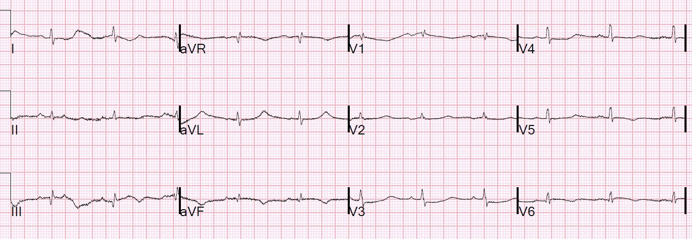
20 phút:

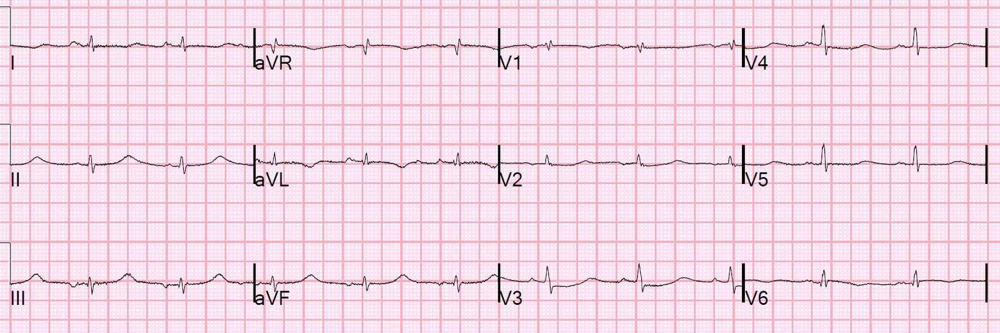
QT rất dài là điều lạ.
Họ đã làm siêu âm tim tại giường (POCUS):
Thành trước đang co bóp và dày lên.
Thành bên (phía dưới bên phải) không co bóp và không dày lên.
Thành sau (ở phía dưới màn hình) cũng không co bóp và không dày lên.
Ngoài lề: Một số người khăng khăng gọi thành sau này là “thành bên,” dù rõ ràng về mặt giải phẫu nó nằm ở phía sau. Lý do là nếu đặt tim theo hướng thất phải (RV) nằm thẳng bên phải và thất trái (LV) nằm thẳng bên trái, thì thành đó đúng là thành bên. Nhưng tim được định hướng với RV ở phía trước nhiều hơn và LV ở phía sau nhiều hơn, nên thành đó thực sự gần lưng nhất (phía sau). Bạn cũng có thể thấy rằng cách định hướng này của tim cũng làm cho thành trước hơi lệch sang bên.
Dù bạn gọi thành này là gì, việc nó nằm ở phía sau là điều quan trọng, vì như vậy vectơ ST chênh lên của thành đó sẽ hướng ngược hẳn với V2 và gây ra ST chênh xuống ở V2, KHÔNG phải ST chênh lên ở các chuyển đạo bên I, aVL, V5 hay V6!!
Việc khăng khăng gọi đó là thành bên bắt nguồn từ một bài báo của Bayes de Luna — https://www.ahajournals.org/doi/full/10.1161/circulationaha.106.624924]
Ca bệnh tiếp diễn
Tôi chỉ xem được các điện tâm đồ, không xem được siêu âm tim.
Tôi được biết bệnh nhân đang dùng Sotalol để kiểm soát ngoại tâm thu thất (PVC). Điều này giải thích QT dài. Tất cả điện giải đều bình thường.
Diễn đạt lại câu trả lời của Smith: “Có thay đổi sóng T động ở thành dưới và ST chênh xuống ở V3. Đây là thiếu máu cục bộ cho đến khi chứng minh được điều ngược lại. Theo điện tâm đồ, không nhất thiết là bán cấp, nhưng có thể là bán cấp. Tuy nhiên, sốc tim thường cần một thời gian mới hình thành, nên có lẽ đây là bán cấp.”
Sau đó tôi được báo troponin I trả về lớn hơn 50.000 ng/L. Mức này chỉ có thể do STEMI.
Tôi nói “hãy kích hoạt phòng thông tim (cath lab).”
Một điện tâm đồ khác được ghi lúc 70 phút:

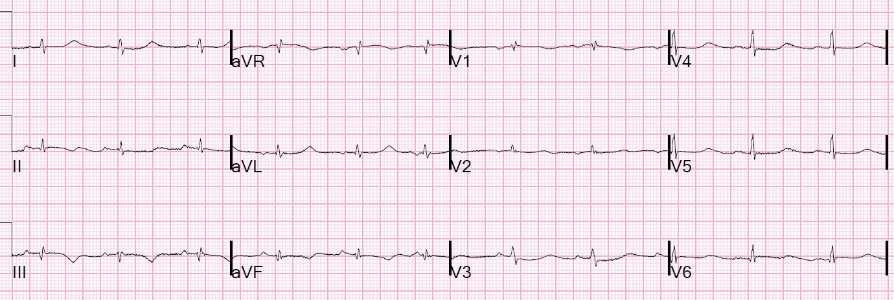
Đây là hình chụp mạch vành:

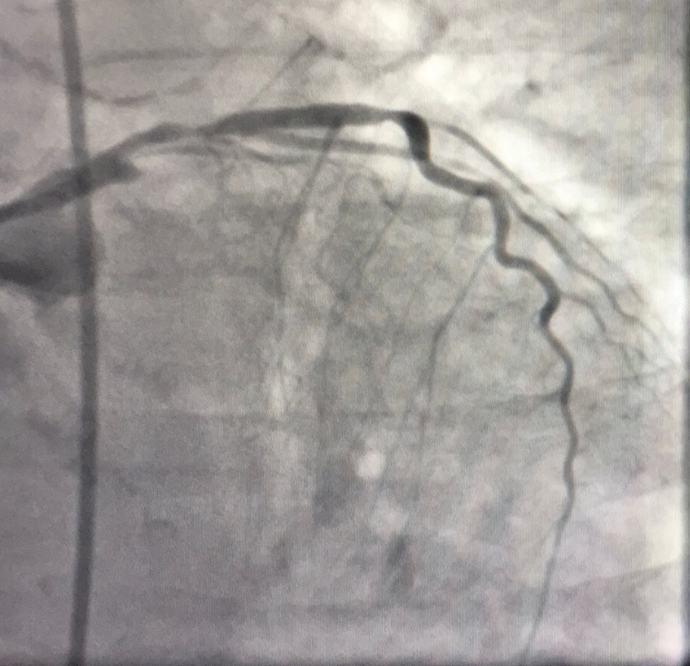
Đây là hình tôi chú thích:

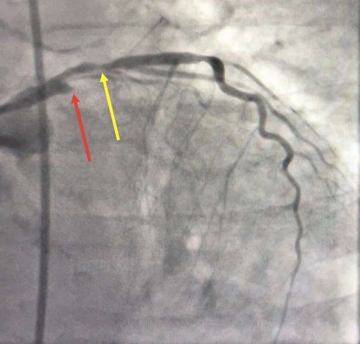
Cả hai đều đã được mở thông:

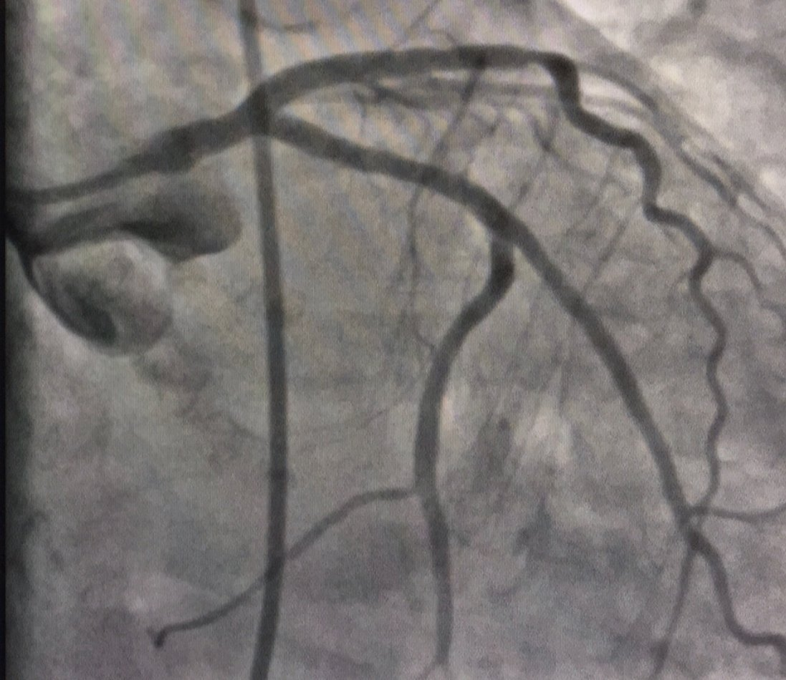
Siêu âm tim chính thức
–Chức năng tâm thu thất trái giảm nặng với EF ước tính 20%.
–Rối loạn vận động thành khu trú–vô động thành trước bên từ đáy đến giữa, thành dưới bên từ đáy đến giữa, và thành bên vùng mỏm.
–Rối loạn vận động thành khu trú–giảm động thành trước từ giữa đến mỏm.
–Áp lực đổ đầy tim trái tăng dựa trên các thông số Doppler (rối loạn chức năng tâm trương độ 2.)
Điện tâm đồ 2 ngày sau:

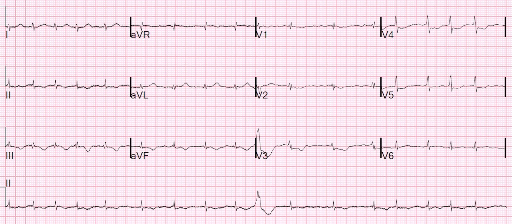
Những điểm cần học:
1. Tắc động mạch mũ có thể chỉ có rất ít dấu hiệu trên điện tâm đồ.
2. Khi một động mạch bị tắc, tim phải phụ thuộc vào các động mạch khác (trong ca này là LAD) để tưới máu cho phần cơ tim đang co bóp. Một chỗ hẹp cố định ở động mạch còn lại đó, nhất là trong bối cảnh tụt huyết áp do tắc động mạch vành thứ nhất, có thể gây thiếu máu cục bộ, chức năng thất trái rất kém và làm sốc nặng thêm.
3. Sốc tim kèm hội chứng vành cấp (ACS) là chỉ định đưa vào phòng thông tim, ngay cả khi bạn không nghĩ là có OMI.
4. ST chênh xuống ở V2/V3 là nhồi máu cơ tim thành sau cho đến khi chứng minh được điều ngược lại.
5. Troponin I lớn hơn 5000 ng/L hầu như luôn do OMI (đã có lúc nghĩ đây có thể là takotsubo, nhưng takotsubo thường không có troponin I lớn hơn 5000 ng/L).
6. Sotalol làm kéo dài QT

===================================
BÌNH LUẬN CỦA TÔI, bởi KEN GRAUER, MD (28/8/2020):
===================================
Dr. Smith nêu bật một số bài học quan trọng rút ra từ ca hôm nay. Tôi chỉ giới hạn bình luận của mình ở một vài điểm đáng quan tâm bổ sung.
- Để rõ ràng — tôi đã gộp 3 điện tâm đồ đầu tiên của ca này vào Hình 1.

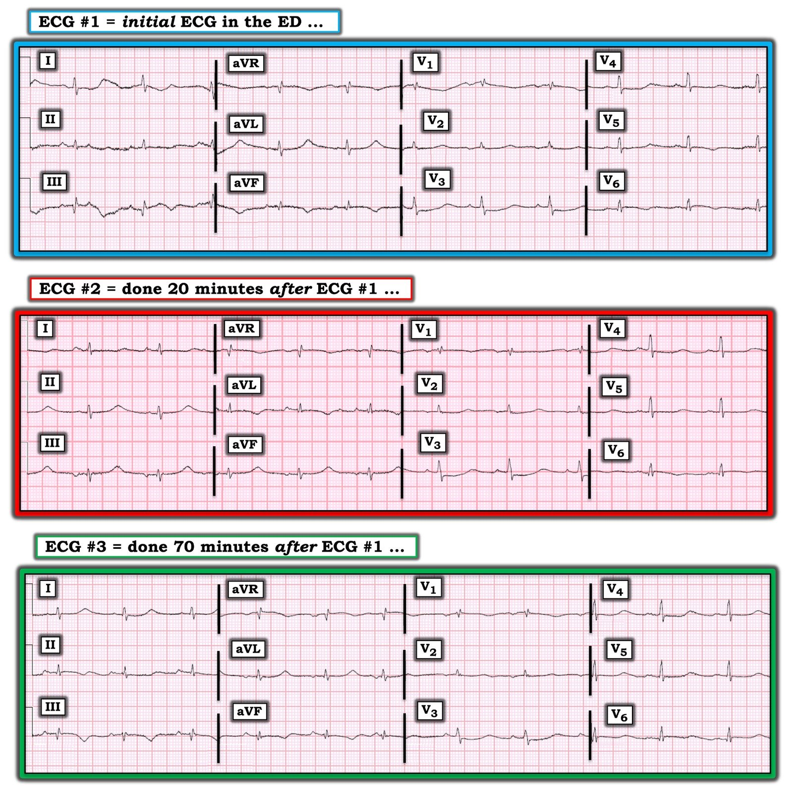
SUY NGHĨ CỦA TÔI về điện tâm đồ #1: Chúng ta được biết bệnh nhân trong ca hôm nay có một đợt đau ngực dữ dội 3 đêm trước khi nhập viện. Tiếp theo vào ngày hôm sau là khó thở tăng dần — và, đến lúc bệnh nhân được khám tại khoa cấp cứu (khi điện tâm đồ #1 được ghi) — bệnh nhân đã ở trong tình trạng sốc tim.
- Nhịp trên điện tâm đồ #1 là nhịp xoang, tần số ~65-70/phút.
- Khoảng PR bình thường và phức bộ QRS hẹp. Như Dr. Smith đã nêu — QTc cực kỳ dài. Chọn chuyển đạo aVL là chuyển đạo mà ta thấy rõ giới hạn của khoảng QT — tôi đo được QT ~540 ms. Hiệu chỉnh theo tần số tim ~65-70/phút cho thấy QTc ~550-560 ms, tức là kéo dài rõ rệt.
- Có điện thế thấp toàn bộ. Biên độ QRS không vượt quá 5 mm ở bất kỳ chuyển đạo nào trong 6 chuyển đạo chi — và thấp dưới 10 mm rất nhiều ở cả 6 chuyển đạo ngực, dù chuẩn hóa bình thường (Xem Hình 2 bên dưới).
- Không có lớn buồng tim (dù với biên độ QRS giảm đến mức như vậy ở cả 12 chuyển đạo — việc đánh giá lớn thất dựa trên tiêu chuẩn điện tâm đồ có lẽ là không thể thực hiện được).
Với bệnh cảnh lâm sàng đau ngực 3 ngày trước, sau đó tiến triển thành sốc tim — MẤU CHỐT để diễn giải nằm ở việc đánh giá Thay đổi Q–R–S–T:
- Nhiễu đường nền khiến việc diễn giải thay đổi ST-T ở các chuyển đạo I, II và III trở nên khó khăn. Ta chỉ thấy 2 phức bộ hoàn chỉnh ở các chuyển đạo này — và phức bộ thứ 1 trong 2 phức bộ đó bị nhiễu làm biến dạng hoàn toàn. Dựa trên hình dạng của 2 phức bộ mà ta thấy được ở chuyển đạo aVF — có vẻ như có một sóng Q tương đối lớn ở chuyển đạo III (tức là gần bằng biên độ sóng R rất nhỏ ở chuyển đạo này) — với sóng Q nhỏ hơn ở chuyển đạo aVF. Ấn tượng của tôi là dù không có ST chênh lên ở các chuyển đạo thành dưới — đoạn ST có dạng vòm (thấy rõ nhất ở chuyển đạo aVF) kèm sóng T đảo ngược — và, ở chuyển đạo aVF thấy hình ảnh soi gương đối ngược (thay đổi soi gương) với ST-T ở chuyển đạo aVL. Như Dr. Smith đã nêu — điều này gợi ý mạnh nhồi máu cơ tim thành dưới mới xảy ra với thay đổi tái tưới máu (phù hợp với bệnh sử đau ngực khởi phát 3 ngày trước).
- Ở các chuyển đạo ngực — dù phức bộ QRS rất nhỏ, vẫn có hình rsR’ ở chuyển đạo V1, cùng với sóng s tận hẹp ở các chuyển đạo bên I và V6, đủ tiêu chuẩn IRBBB (blốc nhánh phải không hoàn toàn – Incomplete Right Bundle Branch Block).
- Có chuyển tiếp sớm — vì phức bộ QRS rất nhỏ ở chuyển đạo V2 đã dương hoàn toàn! Điều này có ý nghĩa — vì chuyển tiếp sớm (với biên độ sóng R ở các chuyển đạo trước tăng tương đối sớm) là một dấu hiệu phù hợp với nhồi máu cơ tim thành sau.
- Có ST chênh xuống rõ ràng ở chuyển đạo V3. Như Dr. Smith đã nhiều lần bình luận — ST chênh xuống tối đa ở chuyển đạo V2,V3 là nhồi máu cơ tim thành sau cho đến khi chứng minh được điều ngược lại.
- Tùy theo ta xem phức bộ nào trong 2 phức bộ ở chuyển đạo V4 của điện tâm đồ #1 — có thể cũng có một ít ST chênh xuống ở chuyển đạo này.
- Tùy theo ta xem phức bộ nào trong 2 phức bộ ở chuyển đạo V5 — có thể có hoặc không có ST dạng vòm kèm sóng T đảo ngược …
- Tôi cho rằng có ST dạng vòm với ST chênh lên nhẹ-nhưng-thật ở chuyển đạo V6 (vì cả hai phức bộ QRST ở chuyển đạo V6 đều cho thấy điều này).
- Tổng hợp lại — Xét theo bệnh sử, và tính đến những khó khăn thêm do nhiễu, điện thế thấp và QTc kéo dài rất nhiều — tôi cho rằng hình dạng và phân bố của các thay đổi thấy trên điện tâm đồ #1 phù hợp nhất với nhồi máu cơ tim dưới-sau-bên mới xảy ra, nhiều khả năng lúc này đang biểu hiện thay đổi tái tưới máu. Phân bố giải phẫu này của các thay đổi điện tâm đồ phù hợp với kết quả thông tim là tắc cấp LCx (động mạch mũ trái – Left Circumflex).
Về điện thế THẤP: Danh sách các nguyên nhân có thể gây điện thế thấp toàn bộ trên điện tâm đồ rất dài (Hình 2).
- Một trong những nguyên nhân gây điện thế thấp dễ bị bỏ sót là mất cơ tim (và mất chức năng cơ tim). Biên độ QRS giảm mạnh ở cả 12 chuyển đạo trong ca hôm nay là thêm một manh mối nữa cho thấy có sốc tim.
Về QTc kéo dài rất nhiều: Chúng ta được biết bệnh nhân hôm nay đang dùng Sotalol để kiểm soát PVC. Có vẻ đây là thuốc chống loạn nhịp dùng lâu dài của bệnh nhân — nhưng chúng ta không được cung cấp thêm chi tiết.
- Ưu tiên ban đầu ở bệnh nhân này rõ ràng là xác định giải phẫu — và tái lập tưới máu mạch vành. Việc này đã được thực hiện xuất sắc, như thấy trên hình chụp thông tim thứ 2 cho thấy các động mạch vành “thông thoáng tuyệt đẹp” .
- Xử trí tối ưu ở thời điểm này trong diễn tiến của bệnh nhân đòi hỏi phải tìm hiểu chi tiết về liệu pháp chống loạn nhịp bằng Sotalol. Việc này nên bao gồm chi tiết về phác đồ liều — bản chất của rối loạn nhịp thất đang được điều trị — và QTc “nền” của bệnh nhân ở trạng thái ổn định với liều Sotalol hiện tại.
- QTc ~550-560 msec (như đã thấy trên điện tâm đồ #1) làm tăng nguy cơ xoắn đỉnh (Torsades de Pointes) do Sotalol gây ra. Vấn đề này cần được giải quyết.
- Cần nhanh chóng kiểm tra nồng độ K+ và Mg++ huyết thanh (cũng như chức năng thận) — vì nồng độ thấp của các điện giải này làm tăng nguy cơ xoắn đỉnh do Sotalol gây ra.
- Chỉ định và liều Sotalol cho bệnh nhân này cần được cân nhắc lại trước khi dùng liều kế tiếp.
SUY NGHĨ CỦA TÔI về các thay đổi điện tâm đồ liên tiếp: Để thuận tiện so sánh từng chuyển đạo một các thay đổi điện tâm đồ liên tiếp trong ca hôm nay — tôi đặt 3 bản ghi đầu tiên cạnh nhau trong Hình 1. Lưu ý rằng kích thước và hình dạng QRS gần như giữ nguyên ở cả 12 chuyển đạo trong mỗi bản ghi trong 3 bản ghi ở Hình 1 — điều này cho chúng ta biết rằng bất kỳ thay đổi ST-T nào chúng ta có thể thấy hẳn là thật!
- Theo những suy luận lâm sàng sắc sảo của Dr. Smith — thay đổi chính giữa điện tâm đồ #1 và điện tâm đồ #2 xảy ra ở các chuyển đạo chi. Cụ thể, sóng T đảo ngược thấy ban đầu ở chuyển đạo aVF (và gợi ý ở chuyển đạo III) của điện tâm đồ #1 — đã được thay bằng sóng T dương. Do biên độ QRS rất nhỏ — các sóng T giờ đây dương ở chuyển đạo II, III và aVF của điện tâm đồ #2 trông cao không tương xứng (tức là tối cấp). Theo Dr. Smith — những thay đổi ST-T động (dynamic) này trong bối cảnh sốc tim gợi ý tắc lại.
- So sánh chính các chuyển đạo chi này với hình dạng ST-T của chúng trên điện tâm đồ #3 — cho thấy sóng T trở lại đảo ngược ở chuyển đạo III và aVF như chúng ta đã thấy trên điện tâm đồ #1, với sóng T lại trở nên dương ở chuyển đạo aVL. Có lẽ đã có sự tái thông tự phát (và tái tưới máu) của động mạch liên quan đến nhồi máu?
- Trái ngược với các thay đổi ST-T liên tiếp ở chuyển đạo chi nêu trên — gần như không có thay đổi liên tiếp nào ở các chuyển đạo ngực giữa các điện tâm đồ #1, #2 và #3.
- LƯU Ý: Chẳng phải việc nhận ra các thay đổi điện tâm đồ liên tiếp sẽ DỄ DÀNG hơn nhiều khi các bản ghi liên tiếp được đặt ngay cạnh nhau sao?
Suy nghĩ cuối cùng: Tôi thấy Điểm cần học thứ 2 mà Dr. Smith nêu bật ở trên đặc biệt đáng quan tâm — vì quá dễ bỏ qua ảnh hưởng không tương xứng lên huyết động mà tắc một động mạch vành đơn lẻ có thể gây ra khi có hẹp đáng kể ở một hoặc nhiều động mạch vành khác.
- Tôi tự hỏi hình dạng ST-T trên 3 bản ghi liên tiếp ở Hình 1 có thể đã bị ảnh hưởng bao nhiêu bởi sự triệt tiêu lẫn nhau của các lực điện? Có vẻ như bệnh nhân đến viện trong tình trạng sốc tim này lẽ ra phải có bằng chứng điện tâm đồ của thiếu máu cục bộ dưới nội tâm mạc lan tỏa (tức là ST chênh xuống lan tỏa kèm ST chênh lên ở chuyển đạo aVR). Liệu một phần ST chênh lên do tắc LCx gần đây/cấp tính (kèm theo hẹp nặng LAD) có thể đã bị triệt tiêu mất bởi ST chênh xuống lan tỏa do thiếu máu cục bộ dưới nội tâm mạc lan tỏa?

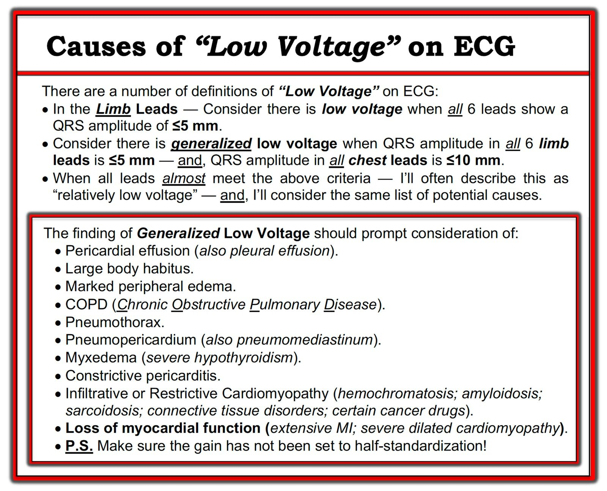

PHẦN BỔ SUNG = Đính chính! (ngày 30 tháng Tám năm 2020):
Là một “chuyên gia” đọc điện tâm đồ đôi khi khiến ta rất khiêm tốn. Vì vậy tôi muốn GHI NHẬN CÔNG của gtob — người đã viết cho chúng tôi hôm nay. Tôi đã chép lại bình luận của anh ấy bên dưới trong Hình 3:

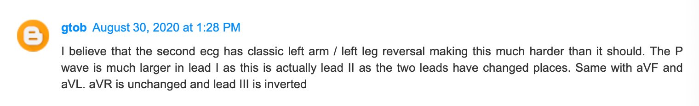
Chúng tôi xin CẢM ƠN gtob — người mà tôi tin là hoàn toàn đúng trong bình luận gửi chúng tôi! Vậy là tất cả chúng ta đều “sống & học”. Dù tôi rất thích phát hiện lỗi kỹ thuật — tôi đã bỏ sót lỗi này. Tất cả chúng ta hãy cùng học từ điều này.
- Trong bài ngày 28 tháng Bảy năm 2020 trên Dr. Smith’s ECG Blog — tôi đã dẫn nguồn tham khảo trực tuyến “tra cứu nhanh” (Quick GO-TO) yêu thích của tôi về các kiểu đặt sai vị trí điện cực thường gặp nhất, lấy từ LITFL ( = Life-In-The-Fast-Lane). Chỉ cần gõ “LITFL Lead Reversal” vào thanh tìm kiếm — và đường link hiện ra ngay lập tức!
- Trong Hình 4 — tôi đặt điện tâm đồ #2 ở TRÊN CÙNG, kèm thêm một khung liệt kê các tác động của đảo điện cực LA-LL lên điện tâm đồ.
- Ở GIỮA Hình 4 — tôi đã đảo ngược chuyển đạo III — hoán đổi vị trí chuyển đạo I và II — hoán đổi vị trí chuyển đạo aVL và aVF — và giữ nguyên aVR.
- Ở DƯỚI CÙNG Hình 4 — tôi lại trình bày điện tâm đồ #1 — để chúng ta có thể so sánh việc hiệu chỉnh các tác động của đảo điện cực LA-LL tạo ra một điện tâm đồ thứ 2 trông gần như giống hệt điện tâm đồ #1 như thế nào. Vì vậy — Mặc dù xử trí lâm sàng thực ra sẽ không thay đổi trong ca này (vì bệnh nhân này vẫn cần thông tim và tái tưới máu kịp thời) — nhìn lại, đã không có thay đổi ST-T “động” nào. Thay vào đó (theo gtob) — đã có đảo điện cực LA-LL trên điện tâm đồ #2.
Những điểm cần học bổ sung từ ca này:
- Hãy nhớ rằng tất cả chúng ta đều là con người và có thể bỏ sót một số dấu hiệu. MẤU CHỐT là học từ những thiếu sót của mình — đó là lý do tôi luôn muốn quay lại và cố tìm hiểu vì sao mình có thể đã bỏ sót một dấu hiệu điện tâm đồ nào đó. Như vậy, tôi sẽ không bỏ sót nó lần nữa! Ca này đưa ra một loạt bản ghi rất khó đọc vì biên độ QRS và sóng P rất nhỏ — RẤT NHIỀU nhiễu trên điện tâm đồ #1 ban đầu — độ lệch ST-T tối thiểu — và QTc rất dài.
- Theo gtob — “manh mối” cho đảo điện cực LA-LL trên điện tâm đồ #2 là sóng P ở chuyển đạo I rõ ràng lớn hơn sóng P ở chuyển đạo II (và điều đó là bất thường khi có nhịp xoang).
- Có một “manh mối” khác tinh tế-nhưng-có-thật mà tôi đã nhận thấy, nhưng không theo đuổi. Trên điện tâm đồ #2 — chúng ta thấy một phức bộ qRS. Điều này rất khác so với hình dạng QRS ở chuyển đạo III của điện tâm đồ #1. Và khi xem lại Hình 4 — giờ đây hẳn đã rõ ràng rằng hình dạng của phức bộ QRS và ST-T nhỏ xíu trên điện tâm đồ #2 gần như là hình soi gương của những gì chúng ta đã thấy trên điện tâm đồ #1. Lần tới khi gặp điều này — tôi cần chú ý kỹ hơn đến kích thước tương đối của sóng P ở chuyển đạo I so với chuyển đạo II.
- Sống & Học!

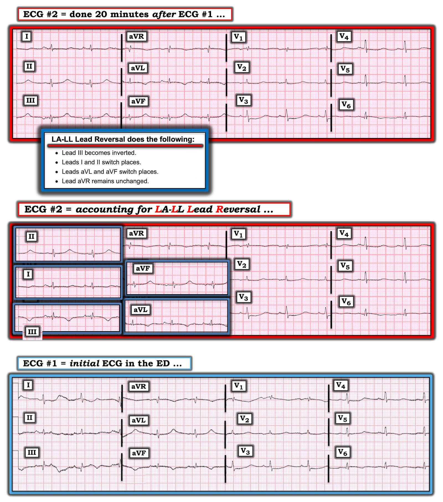